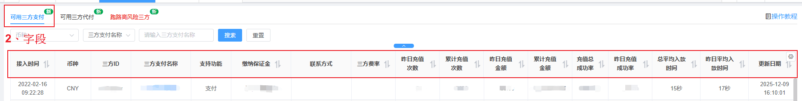
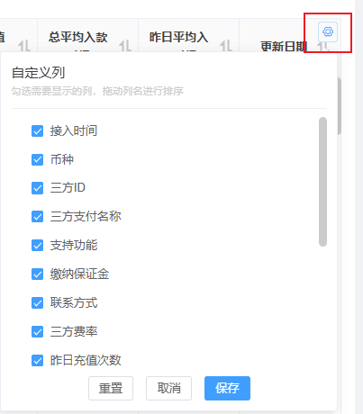
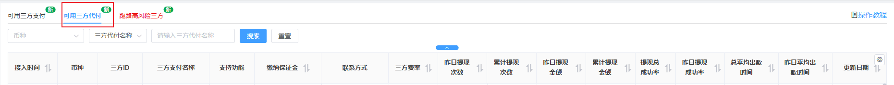
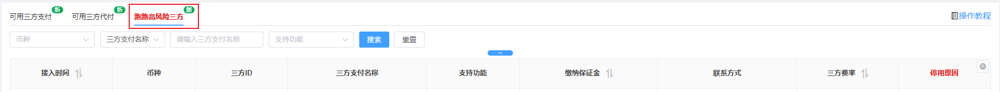

三方支付排名
一、可用三方支付

1、功能说明：查看三方支付通道详细状况，默认占比排序，可切换为成功率排序。
2、字段说明：
(1) 三方支付名称：点击后可跳转到三方【支付】通道页面，会自动搜索显示该通道，若无接此三方则会显示查无此项。
(2) 缴纳保证金：若保证金为0则，显示为：无(自行辨别)，保证金单位为USDT。
(4) 总平均入款时间：小于1小时则显示XX分钟，小于1天则显示 XX小时，大于一天则显示 XX天XX小时。
(5) 更新：每1小时刷新一次。
(6) 自定义列：可自定义需要字段，拖动可进行排序。

二、可用三方代付

1、功能说明：查看三方支付通道详细状况，默认占比排序，可切换为成功率排序。
2、字段说明：
(1) 三方支付名称：点击后可跳转到三方【代付】通道页面，会自动搜索显示该通道，若无接此三方则会显示查无此项。
(2) 支持功能：代付。
三、跑路高风险三方

1、功能说明：被系统标记为【已跑路三方】，建议不要使用。
2、字段说明：
(1) 支持功能：区分三方支付／三方代付。
(2) 停用原因：展示停用原因，统一做风控管理。